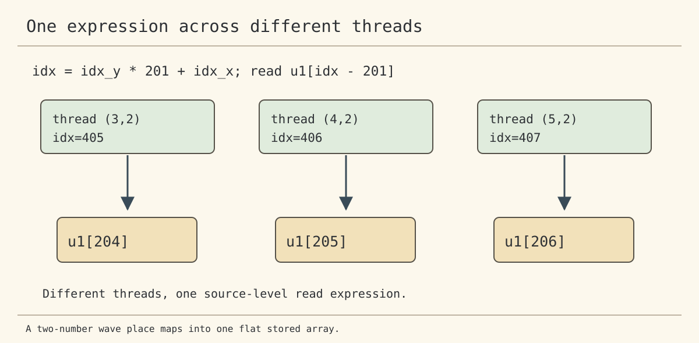
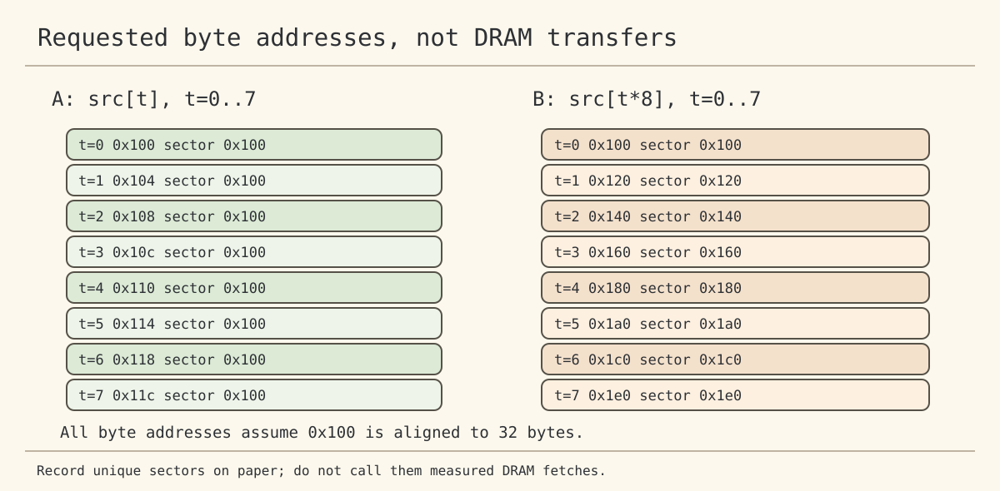
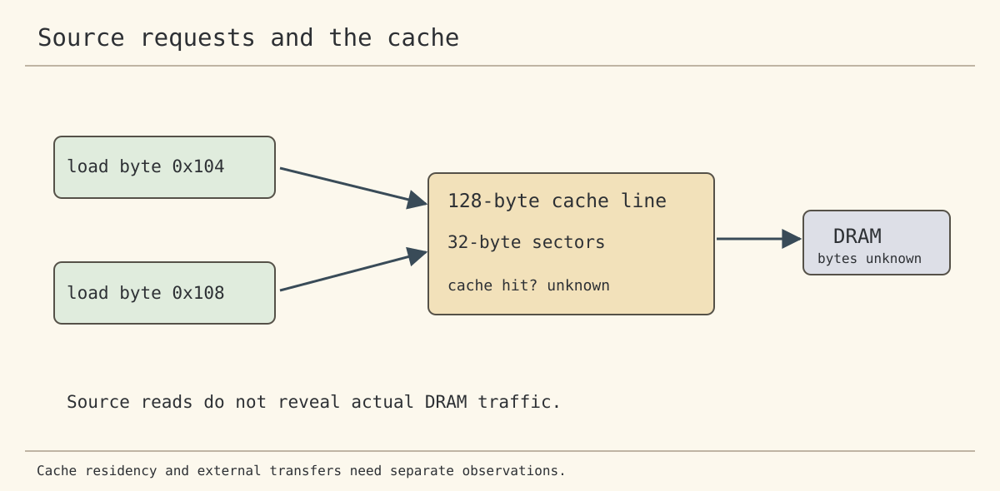
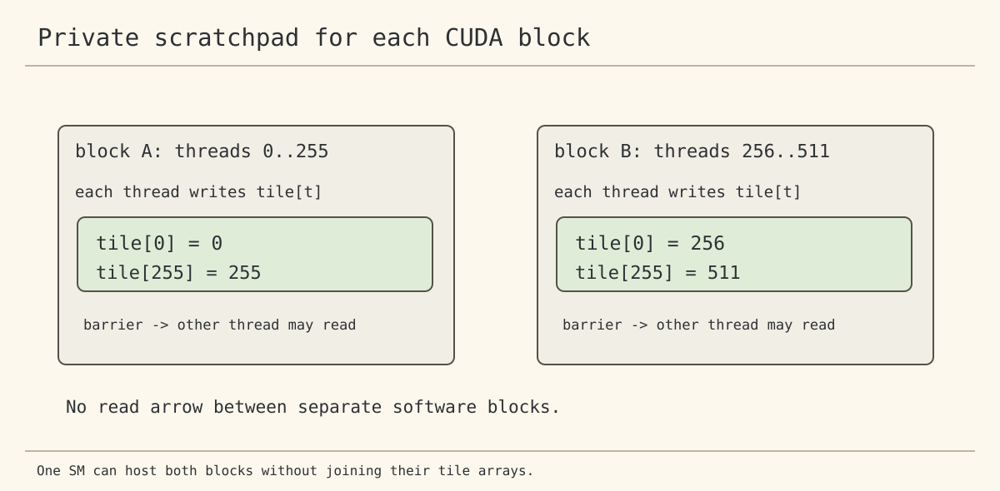

One ordinary wave thread calculates one output from six source-level inputs. This does not prove six physical DRAM transfers. Different threads also execute the source expression. How do their requested input entries relate?
GPU Learnings / Lecture 4
Lecture 4: which requests can travel together?
Original slides, 24 PDF pages · MIT 6.S894
Guess first
DO: With idx=idx_y*201+idx_x and threads (3,2),(4,2),(5,2), write each requested u1[idx-201] entry: ____, ____, ____.
"One thread calculates one output using six inputs." Which inputs do DIFFERENT threads request for ONE expression?
Work it out
idx = idx_y * 201 + idx_x; read = u1[idx - 201];
Read the code in English, piece by piece
The first expression selects a stored index using the two numbers for one wave place. The second expression selects one input value from the array. There is no second physical grid.
L01 The first thread uses idx_y=2 and idx_x=3. Given input.
L02 DO: Substitute into the first expression: ____. L01 and code.
L03 DO: Substitute into the second expression: ____. L02 and code.
L04 DO: Repeat for the other two threads: ____, ____. Given and code.
CHECK the pencil work
All three indices must follow from the one selected expression. No physical memory traffic has been measured.

Trace byte addresses
Assume 0x100 as the first byte address, 4 bytes per float, and 32 bytes per sector. These are teaching assumptions.
DO: List addresses for src[t] and src[t*8], for t from 0 to 7. Mark distinct aligned sectors.

Observe cached data separately
The slides depict 128-byte cache lines and 32-byte sectors. A read expression does not prove a cache hit or DRAM transfer.
DO: Name the counter or instrument needed to prove each claim.

Give each block its own scratchpad
In CUDA, a __shared__ array belongs to one software block, not an entire SM.
DO: Add writes, a block-wide barrier and later reads to the unfinished CUDA source, then verify every output.

Connect the numbers
Keep array indices, byte addresses, sector estimates, actual instructions and hardware counters separate. Which conclusions require more than the source code?
In plain words
Software asks for input values. Hardware serves those requests through several storage levels. The value's input address does not establish where the hardware obtained it. Measure before explaining a performance difference.
Preparation files
Pencil guide | Slide evidence | Measurement sheet | Questions | GTX 1650 commands
Input-address CUDA exercise | Shared-scratchpad CUDA exercise
Your guess against the machine
No new GPU measurement has been taken. Unfinished kernel work must not be interpreted as correct output.
The next question
If every output is correct, does that prove an optimal number of DRAM transfers? Which measurement would be needed?